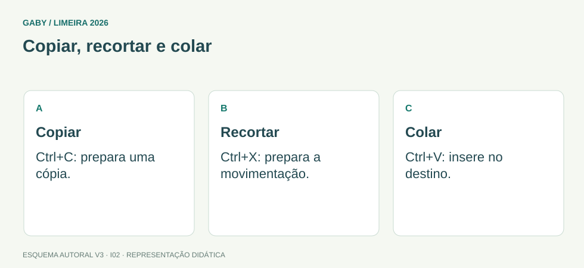

Objetivos do módulo
- Dominar atalhos fundamentais do Windows.
- Entender área de transferência e operações recortar/copiar/colar.
- Reconhecer elementos de interface e área de trabalho.
Copiar, recortar e colar

Descrição em texto do esquema
- Copiar: Ctrl+C: prepara uma cópia.
- Recortar: Ctrl+X: prepara a movimentação.
- Colar: Ctrl+V: insere no destino.
Oficina visual · aplique o esquema
Você quer manter um arquivo em Estudos e criar outra cópia em Revisão. Qual sequência de ações atende ao objetivo?
Atividade autoral complementar da V3. Registre sua resposta; a resolução está no arquivo de gabarito e revisão.
Mapa do conteúdo
1. Área de trabalho e interface
A Área de Trabalho é um espaço de interface que pode conter ícones, atalhos e arquivos. A barra de tarefas dá acesso a aplicativos abertos/fixados, pesquisa, área de notificação e outros recursos, conforme versão/configuração.
2. Área de transferência
A área de transferência mantém temporariamente dados copiados ou recortados para posterior colagem. Ctrl+C copia; Ctrl+X recorta; Ctrl+V cola. Em versões atuais, Win+V pode abrir histórico da área de transferência se o recurso estiver habilitado.
3. Atalhos essenciais
| Atalho | Função típica |
|---|---|
| Ctrl+C | Copiar |
| Ctrl+X | Recortar |
| Ctrl+V | Colar |
| Ctrl+Z | Desfazer |
| Ctrl+A | Selecionar tudo |
| Alt+Tab | Alternar entre janelas/aplicativos |
| Win+E | Abrir Explorador de Arquivos |
| Win+D | Mostrar/ocultar Área de Trabalho |
4. Atalhos x arquivos
Um atalho é uma referência para um alvo. Excluir o atalho normalmente não exclui o arquivo/programa original. O ícone costuma ter indicação visual própria.
5. Menus e contexto
Clique com botão direito abre menu contextual com ações dependentes do item selecionado. Menus, caixas de diálogo e barras de ferramentas variam entre aplicativos, mas conceitos como salvar, abrir, imprimir e propriedades são recorrentes.
Exemplos resolvidos passo a passo
Exemplo 1
Situação: Você copiou um parágrafo com Ctrl+C. O que ocorre ao usar Ctrl+V?
Exemplo 2
Situação: Excluir um atalho do Desktop remove o programa?
Pegadinhas e erros frequentes
- Confundir Ctrl+X com exclusão definitiva.
- Achar que atalho contém o programa inteiro.
- Confundir Alt+Tab com Ctrl+Tab.
Resumo de prova
- Clipboard armazena dados temporários para colagem.
- Ctrl+C/X/V = copiar/recortar/colar.
- Alt+Tab alterna janelas.
- Win+E abre Explorador.
- Atalho é referência.
Exercícios do módulo
Resolva sem consultar o arquivo de gabarito. As questões são autorais e construídas para treinar os conceitos do edital.
- copia
- cola
- recorta
- fecha
- desfaz
- seleciona tudo
- abre Explorer
- recorta
- abre
- imprime
- cola
- salva
- abrir propriedades
- alternar janelas
- imprimir
- apagar arquivo
- Explorador de Arquivos
- Excel
- Editor do Registro
- exclui o programa sempre
- formata disco
- desinstala Windows
- não exclui o alvo
- fecha
- copia
- desfaz a última ação
- refaz
- alinha à direita
- seleciona tudo
- abre Ajuda
- salva como
- mostra/oculta Área de Trabalho
- desliga o PC
- duplica arquivo
- abre Downloads
- guardar arquivos permanentemente
- ser antivírus
- gerenciar impressora
- armazenar temporariamente conteúdo copiado/recortado
Quando terminar, abra Informática 02 - Windows - Atalhos, Área de Trabalho e Área de Transferência - Gabarito e Revisão.
Checklist de domínio
- ☐ Dominar atalhos fundamentais do Windows.
- ☐ Entender área de transferência e operações recortar/copiar/colar.
- ☐ Reconhecer elementos de interface e área de trabalho.
Meta do módulo: 80% ou mais nas questões, sem depender de consulta.
Referências e conteúdos auxiliares
- Microsoft — Atalhos de teclado no WindowsConsulta de atalhos e contextos de uso no Windows.
- Microsoft — Explorador de Arquivos no WindowsOperações com arquivos e pastas. Observe a versão do Windows e a seção aplicável.
Referências externas de apoio consultadas para a V3 em 27/09/2026. A origem das questões é o material autoral do projeto; estes links não indicam que uma instituição publicou ou validou os exercícios. As páginas externas precisam de internet. Em informática, confira a versão do programa; em legislação, observe o recorte e as regras de atualização do edital.